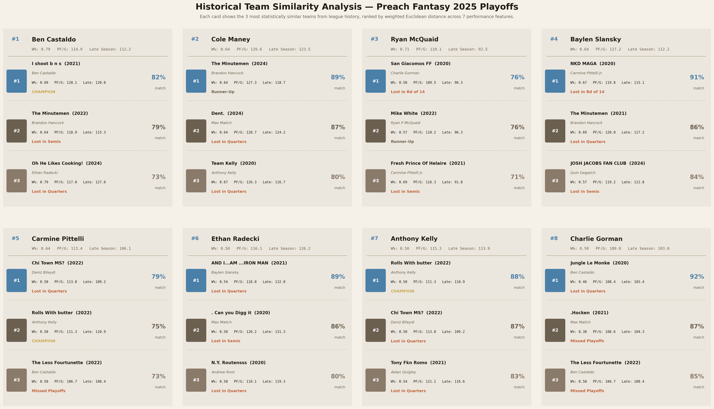
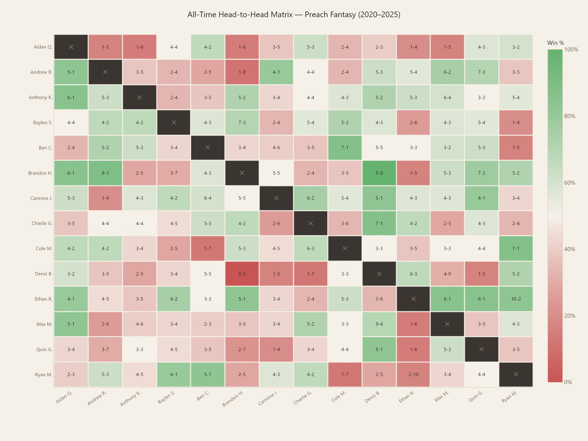
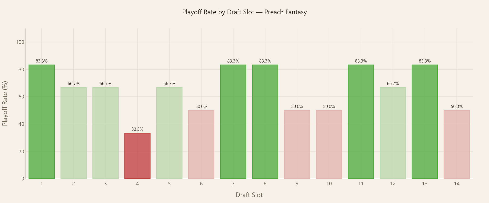
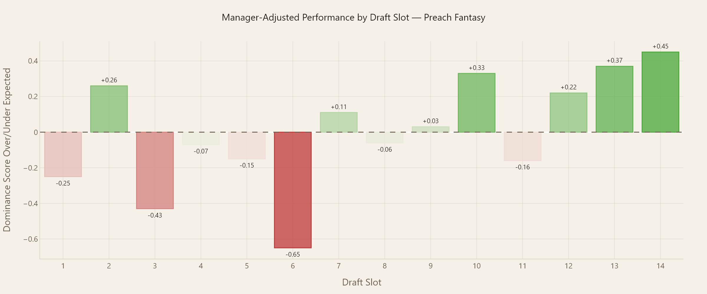

Fantasy Football Analytics Platform
A full-stack fantasy football web application built from scratch with no prior web development experience. The platform transforms six seasons of league data into interactive analytics including custom-built metrics, a machine learning similarity engine, and per-manager performance dashboards, deployed live and accessible to all league members.
Most fantasy football platforms give you wins, losses, and points — and nothing else. They don't tell you whether a team got lucky with their schedule, whether a manager is genuinely dominant or just fortunate, or how a current team compares to the best and worst teams in league history. Standard tools also have no memory: each season starts fresh with no cumulative context.
The goal was to build a platform that treats the league like a real sports organization, with career statistics, historical context, and analytics that actually tell you something meaningful about performance.
"How do you separate genuine performance from luck in a format where schedule randomness plays a massive role in outcomes?"
The application follows a clean separation between data processing, application logic, and presentation. Python scripts handle all analytics and visualization generation; Flask routes serve dynamic pages from pre-processed data; and HTML templates handle display with Bootstrap for layout.
Data Layer
CSV files for matchup history and manager stats. Python scripts for metric calculation, visualization generation, and similarity analysis.
Application Layer
Flask backend with 15+ routes. Pandas for data manipulation. Plotly for interactive chart generation. Auto-runs visualization pipeline on startup.
Presentation Layer
Bootstrap HTML templates. Plotly charts embedded as HTML. Deployed on Render via GitHub with render.yaml configuration.
Rather than surface-level stats, the platform introduces three original metrics designed to isolate real performance signals from the inherent randomness of fantasy scheduling.
Dominance Score
Measures how offensively dominant a team was relative to the rest of the league in a given season. A z-score calculated from points-for per game, where 0 is league average. Positive values indicate above-average scoring, negative values below average.
z = (PF/G - league_mean) / league_stdLuck Score (LR Z-Score)
Measures how favorable a team's schedule was. Based on points-against per game. A team that faced weak opponents all season has a negative luck score. A high positive score means the schedule actively worked against them despite strong performance.
z = (PA/G - league_mean) / league_stdSchedule Luck Matrix
Compares a manager's actual win-loss record each season against their predicted record, where predicted wins are calculated by determining whether their weekly score exceeded the league median that week. The gap between actual and predicted reveals true schedule luck.
luck = actual_wins - predicted_winsDraft Slot Analysis
Manager-quality-adjusted analysis of historical draft slot performance. Accounts for the fact that stronger managers tend to cluster in certain slots over time, using each manager's career average Dominance Score as a quality baseline before measuring slot-level over or underperformance.
adj = actual_dom - expected_domThe most technically complex feature is the historical team similarity engine, which matches each 2025 playoff team against every team in league history using a weighted Euclidean distance algorithm. The system normalizes all features using StandardScaler, applies custom weights to reflect the relative importance of each metric, and returns the top 3 most similar historical teams with a similarity score out of 100.

2025 playoff team similarity cards — each card shows the 3 most statistically similar teams from league history, ranked by weighted Euclidean distance across 7 performance features.
| Feature | Weight | Reasoning | Relative Importance |
|---|---|---|---|
| Late Season PF/G (Wks 10-13) | 2.0 | Best predictor of playoff form | |
| Season PF/G | 1.7 | Overall scoring ability | |
| Win Percentage | 1.4 | Season-level consistency | |
| Luck Score (LR Z-Score) | 1.1 | Schedule context | |
| Dominance Score | 0.9 | Relative scoring dominance | |
| Draft Slot | 0.6 | Roster construction context | |
| Point Differential | 0.4 | Secondary performance signal |
The algorithm also handles non-standard playoff structures. The 2020 season had 14 teams with 4 playoff rounds, and 2021 included a wildcard game for two managers, requiring custom normalization logic to make historical comparisons meaningful across seasons with different formats.
Every manager in the league has a dedicated profile page generated dynamically from the data. Each profile includes a career summary with rank-among-peers coloring, a full season-by-season table, and three Plotly visualizations generated at startup by generate_manager_visualizations.py.

All-time head-to-head matrix across all managers (2020-2025). Green cells indicate winning records, red cells losing records — color intensity reflects dominance.

Playoff rate by draft slot — slots 1, 7, 8, 11, and 13 show the highest historical playoff conversion rates at 83.3%.

Manager-quality-adjusted dominance score by draft slot — controls for the fact that stronger managers cluster in certain positions over time.
- Late-season form is the strongest predictor of playoff success. Teams that peaked in weeks 10-13 dramatically outperformed their seeding in the playoffs — this is why it was weighted most heavily in the similarity algorithm.
- Schedule luck materially distorts final standings. Several managers finished outside the playoffs in seasons where their predicted record based on weekly median performance would have comfortably qualified them.
- Draft slot has limited predictive power when adjusted for manager quality. Middle-round picks (slots 5-9) showed slight overperformance, but the effect nearly disappears once manager-quality variance is controlled for.
- Historical similarity scores meaningfully predicted playoff outcomes. Teams matched to historical champions showed higher advancement rates in round 1, validating the feature weighting approach.
This was my first experience building a full-stack web application, built entirely without prior web development knowledge. The project forced me to connect skills I already had in Python, data analysis, and statistical thinking to an entirely new domain of Flask routing, HTML templating, and production deployment. The biggest technical challenge was building the playoff normalization logic for non-standard seasons — getting the similarity algorithm to treat 2020's 14-team format and 2021's wildcard round as comparable to standard seasons required careful thought about what the data actually meant versus what it said.
The most valuable thing a data scientist can build isn't always the most complex model — it's the tool that makes good analysis accessible and interpretable to the people who need it.